# 特征提取
# 引言
# 特征提取的含义
从数据观测获得原始特征表达的过程，例如：将一 幅图像表示成一个向量；将一个文本转化成一个向 量；将一段语音表示成一个向量等。
从一组已有特征进行变换，得到新特征的过程（特 征变换），有利于模式分类任务。
特征提取的最终形式都是使用向量来表示数据样本， 便于分析。
# 特征提取的目的
- 数据表达，有利于后续任务
- 减少噪声影响，提高稳定性
- 提取观测数据的内在特性
# 特征提取对象
- 语言特征提取
- 文本特征提取
- 视觉特征提取
# 视觉特征提取
早期视觉匹配：待匹配图像和场景建立映射关系，利用选择点来进行映射关系的拟合。
特征点检测：分别从两幅图像中确定具有某种特性的点。
特征点可辨识度高，容易和周围点区分开来！
特征点描述：利用一个向量来对特征点周围的信息进行表达，对特征点构造“个性签名”的过程。
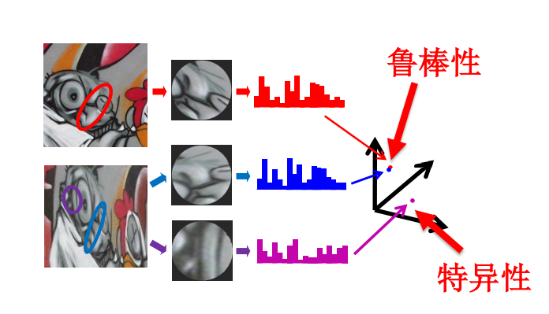具备特性：
- 鲁棒性：相同物理点在不同图像中的特征描述向量之间 具有很强的相似性（在高维特征空间中距离很近）
- 特异性：不同物理点的特征描述向量之间具有很大的差异性（在高维特征空间中离的很远）
特征点匹配：建立特征点之间的对应关系。
# SIFT
技术路线
高斯尺度空间构建
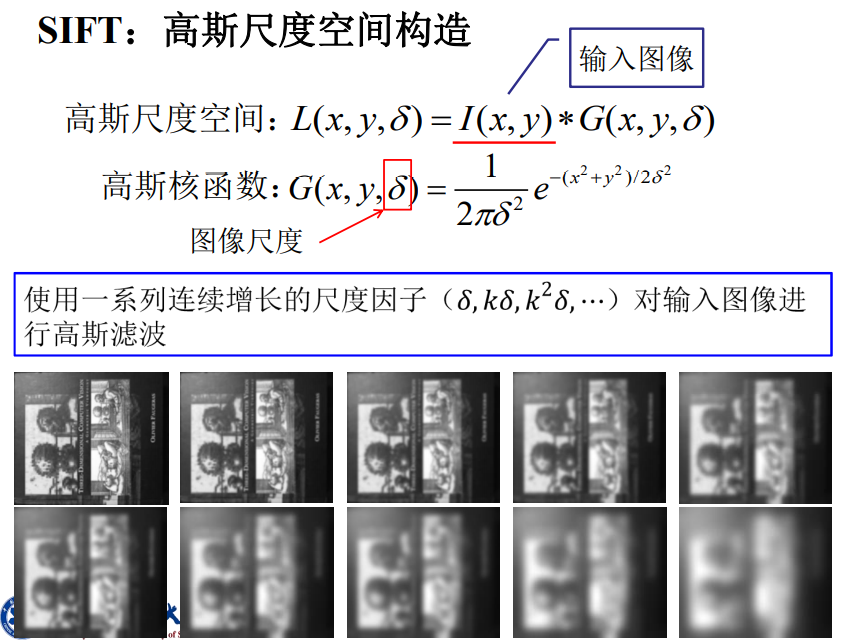高斯差分尺度空间构建
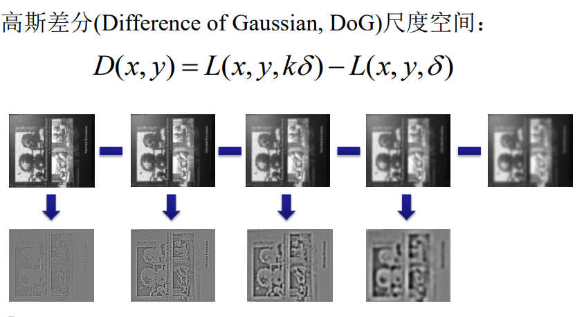
尺度空间构造问题：尺度越大，对应的高斯核空间范围越大，卷积计算量大
解决方案：对尺度空间进行分组
核心理论支持：高斯尺度空间下，尺度翻一倍等价于图像下采样一倍
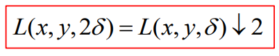利用该原理，在高斯核太大时，对图像下采样，再对下采样图像基础上再高斯滤波。
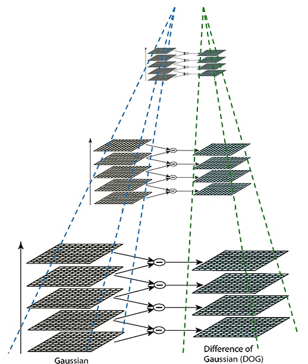 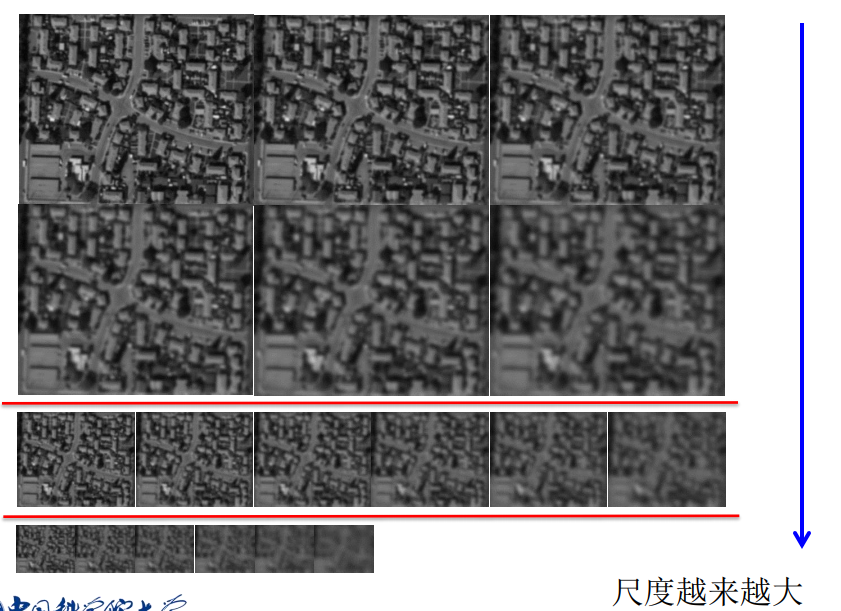
极值点检测
通过在高斯差分尺度空间中进行极值点检测进行初始特征点 定位，包括位置(x, y)和尺度(s)
为了寻找尺度空间的极值点，每个像素点要和其图像域（同一尺度空间）和尺度域（相邻的尺度空间）的所有相邻点进行比较，当其大于（或者小于）所有相邻点时，改点就是极值点。
如图所示，中间的检测点要和其所在图像的3×3邻域8个像素点，以及其相邻的上下两层的3×3领域18个像素点，共26个像素点进行比较。
从上面的描述中可以知道，每组图像的第一层和最后一层是无法进行比较取得极值的。为了满足尺度变换的连续性，在每一组图像的顶层继续使用高斯模糊生成3幅图像。
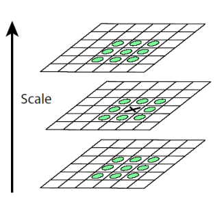 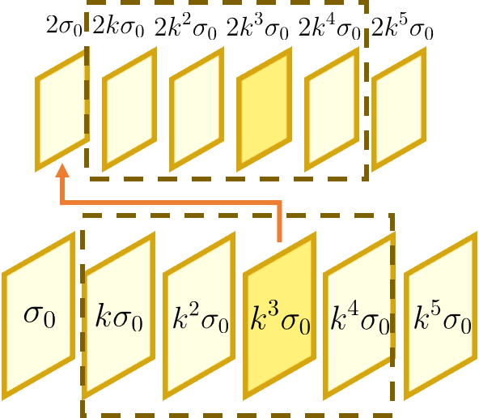特征点精细定位
在三维(x,y,s)空间内进行二次曲线拟合，确定峰值，作为精细的特征点定位结果。
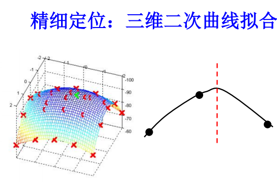 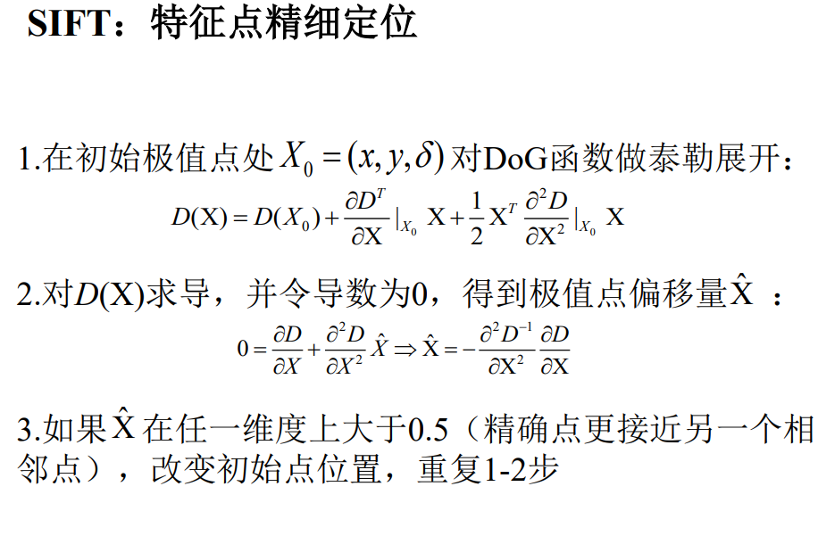 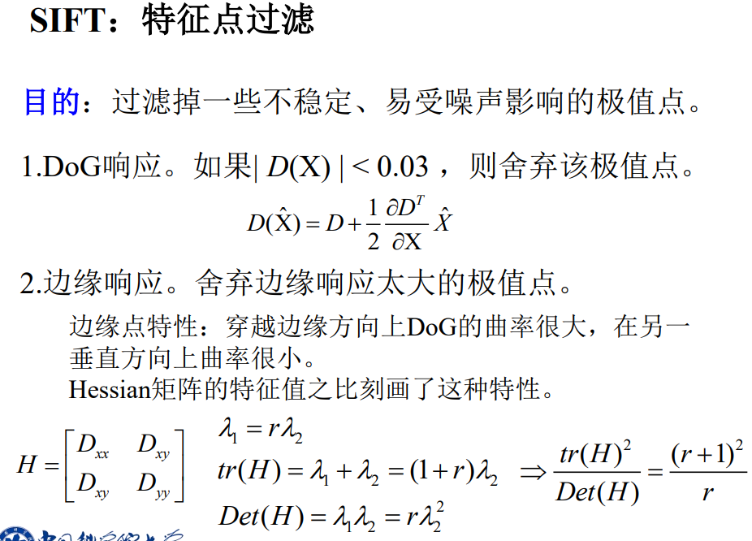特征点精细定位案例：
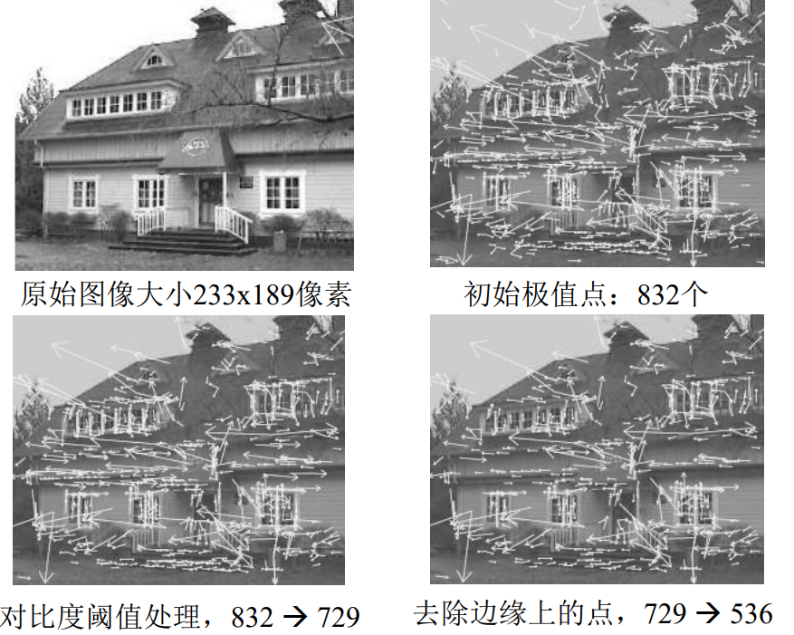特征点方向计算
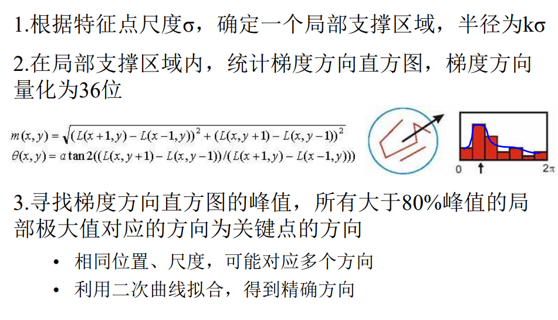
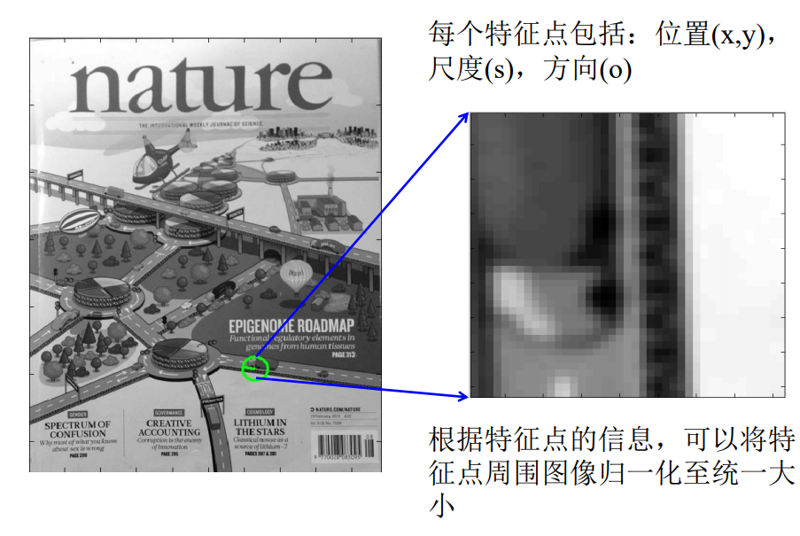详细描述：
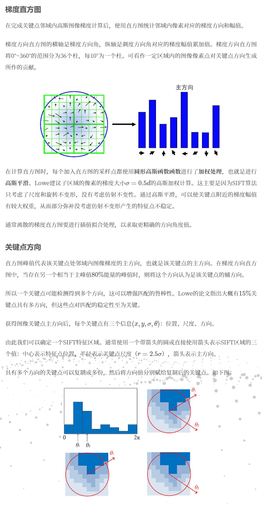特征描述子构造
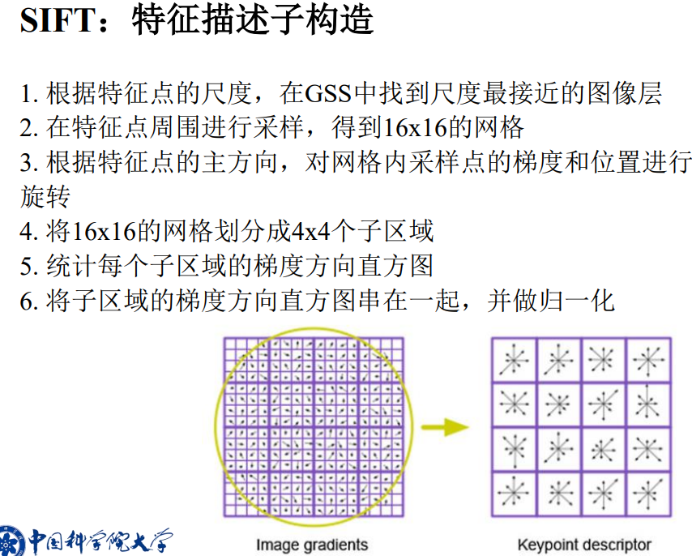详细描述：
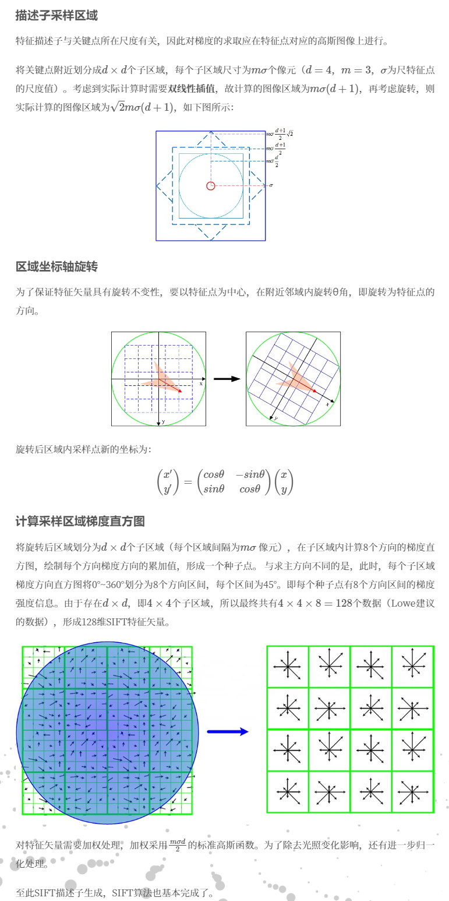
特点：
尺度不变性
得益于尺度空间构造
旋转不变性
得益于参考主方向
对光照变化的稳定性
区分能力
对视角变化/局部位移的稳定性
# CNN【待完善】
细节：卷积核权重训练；卷积，池化，激活
卷积神经网络可做为一般化的特征提取算子。
在送入全连接层之前的操作，可以当成图像特征提取。全连接层的输入，即为图像的特征
# 视觉词袋模型【待完善】
# 语言特征提取
语音特征提取用途：
- 语音识别：辨别一段语音波形是什么，将语言转化为文本
- 说话人识别：辨别一段语音波形是谁发出来的
技术路线：
- 对输入语言信号进行预处理
- 对语言信号进行分帧，加窗处理
- 对每一帧的波形信号进行一些特点的数学运算，得到低维向量作为提取的特征
# MFCCs
MFCCs（Mel Frequency Cepstral Coefficents，梅尔倒谱系数）：一种在自动语音和说话人识别中广泛使用的特征。
- 1980年由Davis和Mermelstein提出，语音识别领域人工特征的佼佼者。
- 符合人的听觉特性。
流程：
语言信号分帧：将一段语音信号，划分成若干帧。
- 帧信号要加窗函数，使得帧两端信号平滑过渡到零
- 帧与帧之间有重叠（帧移），以免帧边缘处信号因加 窗弱化而丢失
逐帧计算MFCCs特征
- 傅里叶变换：对分帧后的语音信号进行傅里叶变换， 只保留幅度谱，丢弃相位谱
- 根据梅尔刻度，利用频域三角窗对傅里叶幅度谱进行求和
- 对求和后的幅度取对数
- 离散余弦变换：对取对数后的幅度信号进行离散余弦变换，得到MFCCs特征。
# 文本特征提取
向量空间模型（Vector Space Model）：将一个文档表示成一个向量，向量的相似性反应了文档的相似性。一个维度对应于一个词项。如果一个词项出现在一篇文档中，它在向量中的值是非零的， 否则为零。
文档/文本：若干词项的有序集合。
文本特征提取：将文本内容转化为向量的过程。